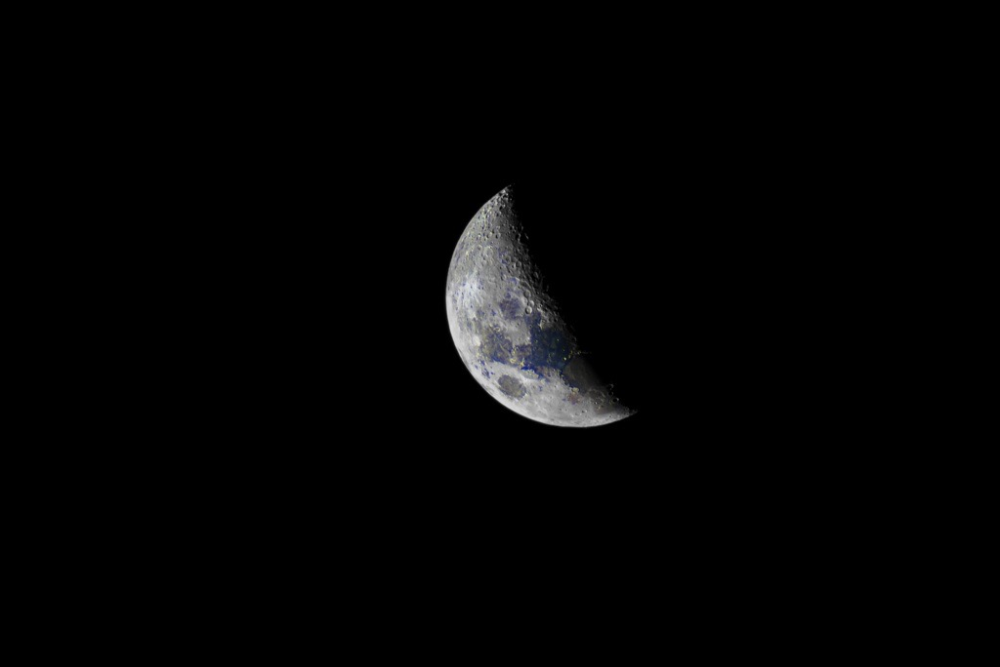
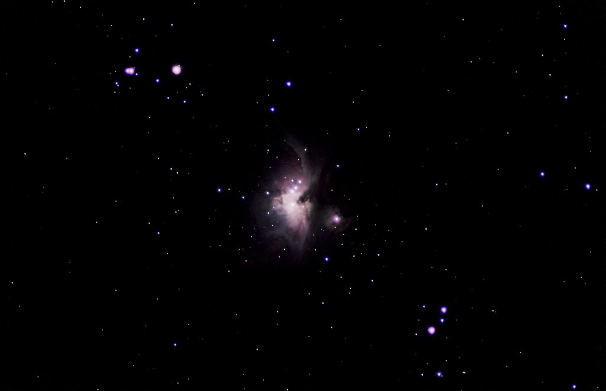
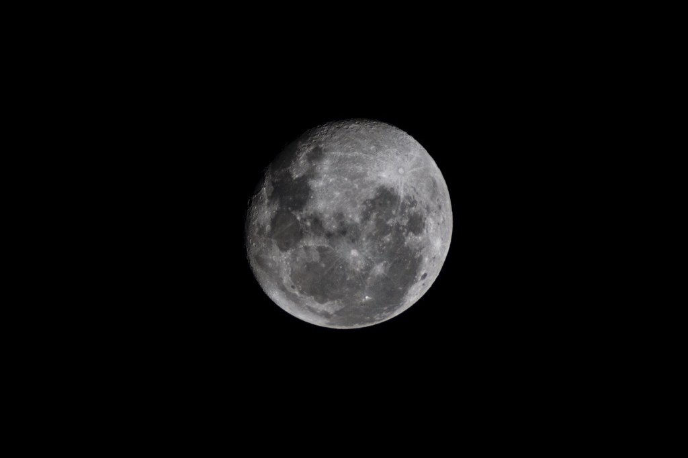
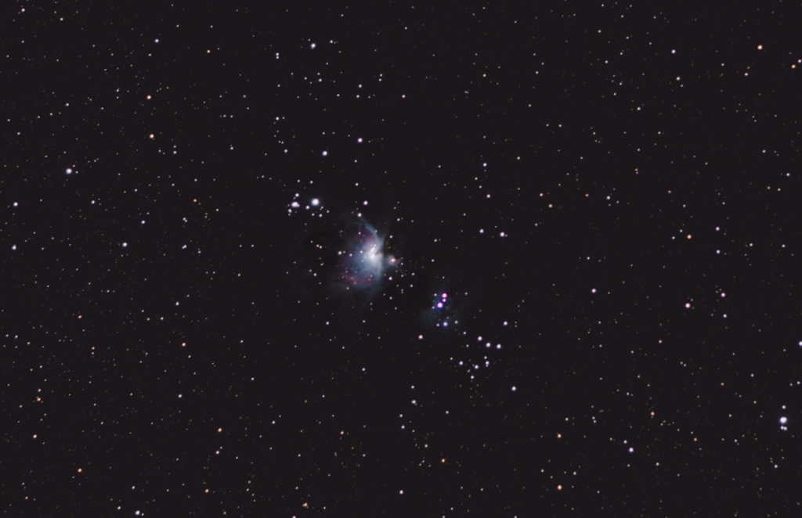

|  |  |
| Crescent Moon | Orion Nebula |
| The crescent moon seeing from New Zealand's sky | the orion nebula as seen from New Zealand |
| gap | |
|  |  |
| Full Moon | Orion Nebula and the sky |
| The full moon seeing from New Zealand's sky | the orion Nebula seen with New Zealand's sky |